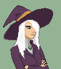

Home
Sylvia Blackheart

About
Silvia is a witch of unknown age and power, who runs a shop that deals in rare magical artifacts. She is surrounded by mystery
Personality
Eccentric, Mysterious, Aloof
She is a bit eccentric, and often seems bored with whatever is happening around her. Her moral and ethical standards are somewhat questionable, and she seems mildly sadistic.
Major Story Beats
Backstory
She owns a shop of magical artifacts